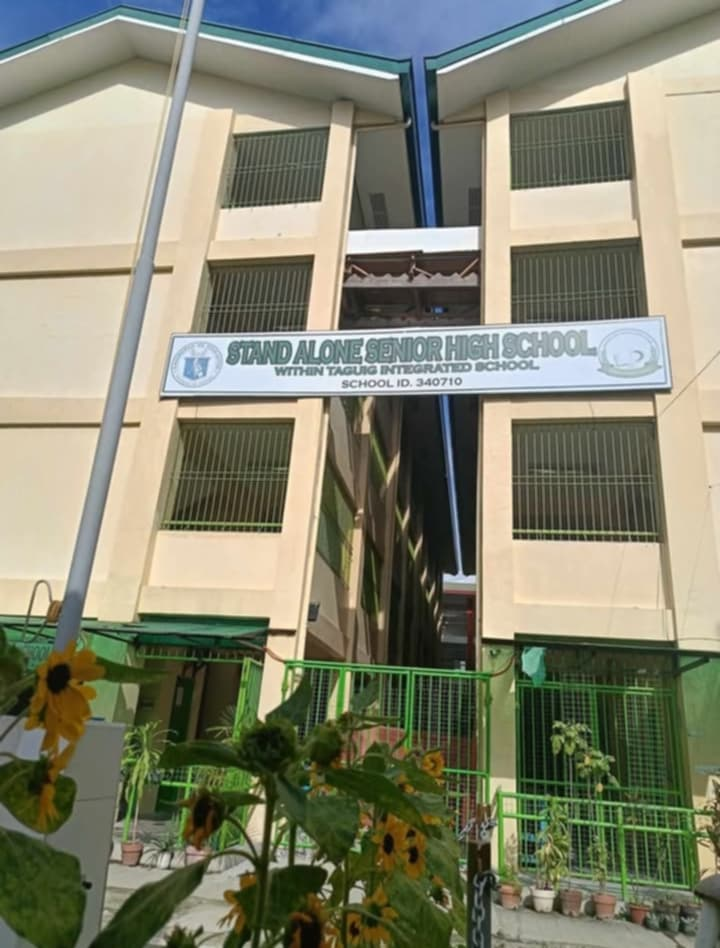
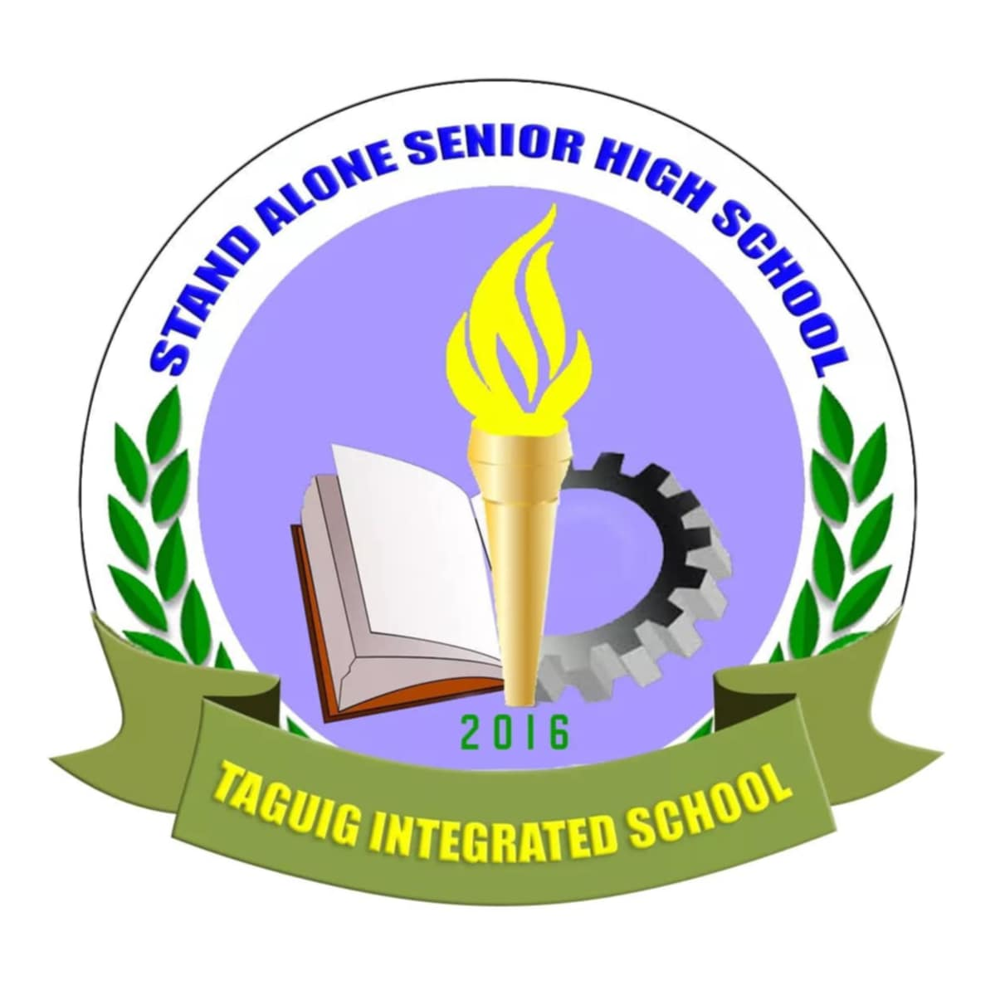

STAND ALONE SENIOR HIGHSCHOOL WITHIN TAGUIG INTEGRATED SCHOOL
GALLERY
ACTIVITY


DESCRIPTION
Stand-Alone Senior High School within Taguig Integrated School is a public secondary institution in Taguig City, Philippines, operating exclusively for Grades 11–12. It is part of Taguig Integrated School (TIS) but functions independently as a stand-alone senior high school.
Melissa Manalili
Grade 11 - ICT Industry